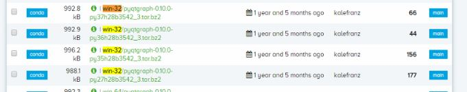
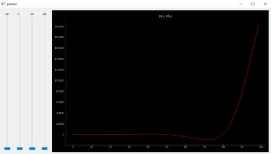

처음에는 pyqt5 패키지 사용을 위해 아나콘다를 접하게 되었다. pip install 없이도 아나콘다만 다운받아서 설치하면 함께 설치되는 Global package 안에 포함되어 있어, interpreter 설정을 아나콘다로 해주어 해결이 가능했다. 하지만, Global package 에 존재하지 않는 pyqtgraph 를 사용하려니 도저히 방법을 찾을 수가 없었고 결국 구글링해서 찾아낸 offline 설치로 해결할 수 있었다. 방법은 아래와 같다.
1. Anaconda 홈페이지에서 해당 package 의 “.tar.bz2” 파일을 다운 pyqtgraph 를 예를들면 이렇게 하면 된다. 우선 아래 결로에 들어가서 OS 환경과 Python 버전이 맞는 파일을 다운받으면 된다.

여기서 다운받을 수 있다. 다운받은 파일을 아래 경로에 넣어주면 된다. C:\Users\user_name\AppData\Local\Continuum\anaconda3\Scripts
2. Anaconda prompt 실행 후 offline install 명령 명령은 다음과 같다.
defupdate_plot(self): a = self.w1.x b = self.w2.x c = self.w3.x d = self.w4.x x = np.linspace(0, 10, 100) data = a + np.cos(x + c * np.pi / 180) * np.exp(-b * x) * d self.curve.setData(data)
if __name__ == '__main__': app = QApplication(sys.argv) w = Widget() w.show() sys.exit(app.exec_())

#있을수도 있고, 없을수도 있습니다
어떤 패키지는 .tar.bz2 형식이 지원되지 않거나, 업로드 되어 있지 않은 경우들도 있다. 구글링 했을 때 기억으로 변환해서 하는방법도 있었던것 같지만 이 방법이 가장 확실하게 잘 되는 방법이므로 오늘은 여기까지.